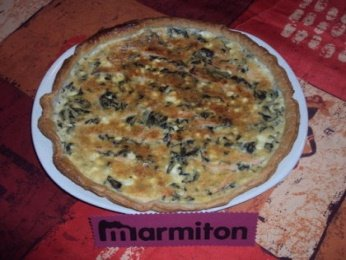

Quiche saumon épinards chèvre
Ingrédients
×
- 4 oeufs
- 25 cl de crème fraîche
- 150 g de chèvre frais
- 100 g d'épinards en branches
- sel
- poivre
- muscade
- 1 pâte feuilletée
- 200 g de saumon fumé

Préparation
Étape 1
Fouetter 4 oeufs avec 25 cl de crème fraîche, 150 g de chèvre frais, 100 g d'épinards en branches décongelés, du sel, du poivre et de la muscade.
Étape 2
Verser sur 1 pâte feuilletée et répartir 200 g de saumon fumé en lanières.
Étape 3
Cuire 25min à 190ºC.
Résumé
4 oeufs
25 cl de crème fraîche
150 g de chèvre frais
100 g d'épinards en branches
sel
poivre
muscade
Fouetter
1 pâte feuilletée
200 g de saumon fumé
répartir
Cuire 190ºC